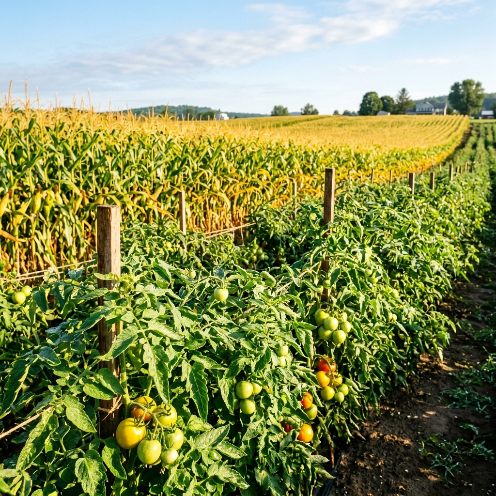
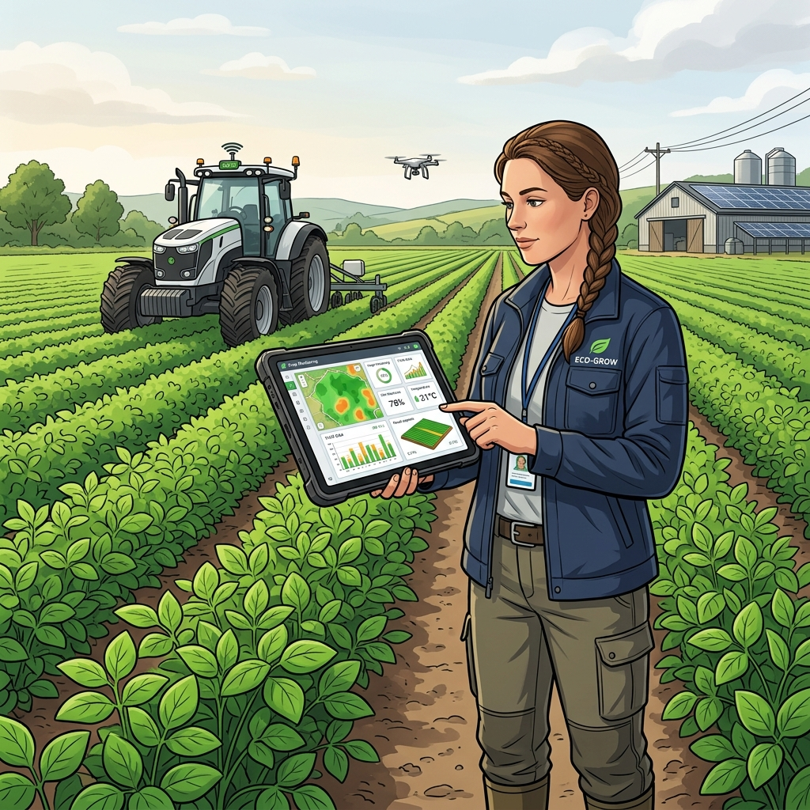
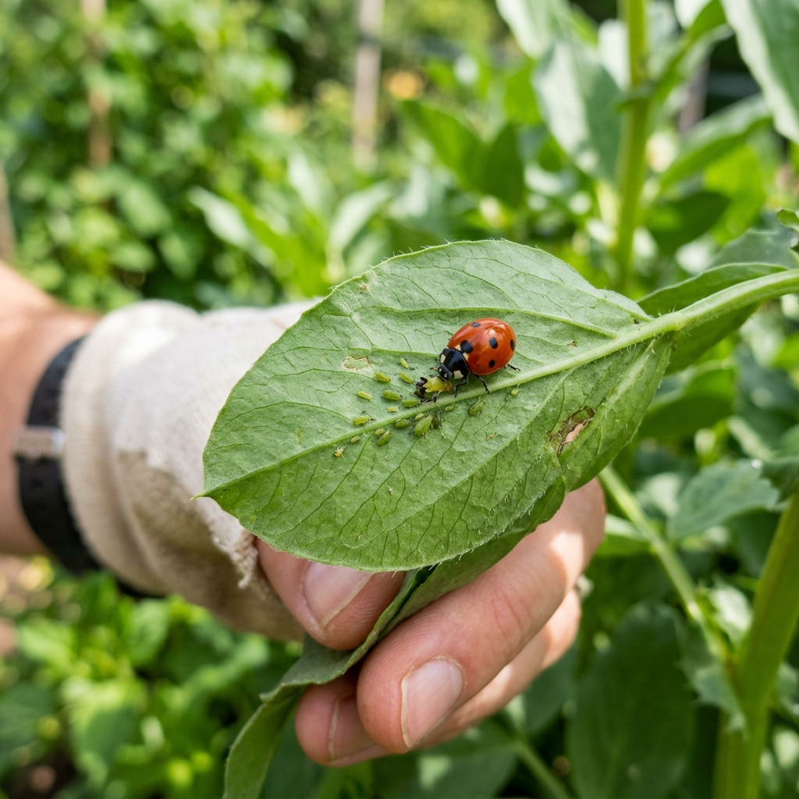

|
Monitoreo ecológico y diagnóstico biológico inteligente para tus cultivos

Quiénes Somos
Liderando la revolución ecológica y tecnológica en la agricultura
En AgroControl, fusionamos el poder del análisis inteligente y el monitoreo biológico para ofrecer soluciones sustentables a agricultores de todo el mundo. Nuestro compromiso es resguardar la salud de tus cultivos utilizando tecnología de inteligencia artificial avanzada, ayudándote a identificar amenazas de forma precisa y a calcular dosificaciones exactas de insumos orgánicos.
Creemos en una agricultura libre de excesos químicos, donde la prevención y el control natural sean los pilares para un rendimiento saludable y respetuoso con el medio ambiente.
🛡️ Análisis IA
Diagnóstico de plagas y enfermedades en segundos con Gemini IA.
🧮 Dosis Exactas
Cálculo preciso de insumos biológicos para evitar el desperdicio.
🐞 Manejo Orgánico
Enfoques culturales y biológicos respaldados por la ciencia.
📊 Historial Rápido
Guarda tus consultas para un seguimiento continuo del cultivo.

Nuestros Cultivos
Maíz Agrícola
Uno de los cultivos más importantes, susceptible al ataque de insectos masticadores como el gusano cogollero. Requiere un monitoreo foliar y del brote apical para evitar pérdidas severas.
Tomate y Solanáceas
Cultivos delicados con altas exigencias de nutrientes. Suelen sufrir de invasiones rápidas de Mosca Blanca y Araña Roja bajo condiciones cálidas e invernaderos.
Hortalizas de Hoja
Ciclos de cultivo cortos como lechugas, coles y espinacas. Sus principales amenazas son colonias de pulgones que debilitan la planta y transmiten virosis perjudiciales.
Catálogo de Plagas Comunes

Gusano Cogollero
Spodoptera frugiperdaAtaca perforando las hojas interiores y destruyendo el punto de crecimiento de la planta. Provoca retraso grave en el desarrollo foliar y fallas en la floración.
Control: Aceite de Neem o Bacillus ThuringiensisPulgón Agrícola
AphididaeInsectos succionadores que se agrupan en yemas jóvenes y en el envés foliar. Secretan melaza dulce que fomenta hongos destructores como la negrilla.
Control: Jabón Potásico o Fomento de MariquitasMosca Blanca
Bemisia tabaciPequeñas moscas aladas que debilitan la planta al succionar savia. Su principal peligro radica en su capacidad para diseminar gran variedad de virus fitopatógenos.
Control: Extracto de Ajo o Trampas Cromáticas AmarillasCuidados y Prevención
💧 Cuidados Esenciales
Riego Tecnificado y Eficiente
Aplica riego dirigido por goteo para nutrir directamente la raíz sin mojar en exceso el follaje, disminuyendo la proliferación de hongos nocivos.
Nutrición Orgánica Balanceada
Abona regularmente con humus de lombriz o compost para dotar al suelo de microbios benéficos, mejorando el vigor y defensas naturales de la planta.
Inspección y Limpieza Periódica
Realiza podas sanitarias retirando hojas secas o infectadas y malezas. Esto previene focos de humedad y disminuye hábitats de refugio de plagas.
🛡️ Prevenciones Clave
Rotación de Cultivos Planificada
Alterna especies de diferentes familias botánicas en cada ciclo productivo para cortar de raíz el ciclo reproductivo de plagas persistentes en el suelo.
Cultivos Asociados Repelentes
Siembra plantas de aroma fuerte (albahaca, ajo, caléndula) entremezcladas con tu cultivo para despistar y ahuyentar insectos dañinos de forma pasiva.
Refugios de Fauna Benéfica
Evita insecticidas de amplio espectro para fomentar el establecimiento de insectos depredadores como las mariquitas, crisopas y avispas parásitas.